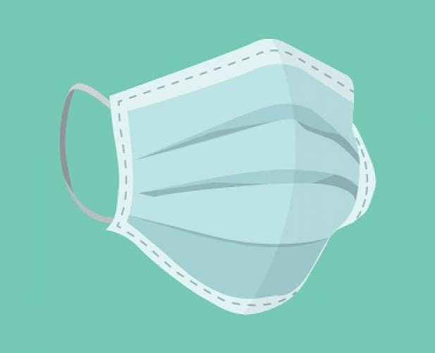

Peran Pemerintah
Upaya penanggulangan ditunjukkan untuk memperkecil angka kematian, membatasi penularan serta penyebaran penyakit agar tidak meluas ke daerah lain. Berikut peran pemerintah dalam mencegah dan menanggulangi wabah SARS, yaitu:
- Kartu Kewaspadaan Kesehatan
- Fasilitas Medis
- Penyebaran Informasi
- Bantuan Tunai dan Non Tunai
Kartu ini diberikan kepada setiap orang yang datang dari luar negeri atau dari daerah lain yang digunakan untuk memantau kesehatan mereka. Kartu Kewaspadaan Kesehatan ini berisi biodata penumpang (meliputi nama, umur, jenis kelamin, kebangsaan, nomor paspor/ KTP, nomor telpon/ handphone, dan lain-lain.), keterangan perjalanan (datang dari kota/ provinsi, tanggal kedatangan, nomor pesawat/ kapal, nama pesawat/ kapal, nomor kursi, dan lain-lain.), serta kondisi kesehatan penumpang.
Di bandara/pelabuhan, pemerintah menyiapkan posko SARS untuk mengecek kesehatan WNI maupun WNA serta menganjurkan untuk tinggal di rumah selama 14 hari setelah pengecekan. Pemerintah juga menyediakan pelayanan Hotline Service, serta menyiapkan 7 rumah sakit di Jakarta, Medan, Surabaya, dan Semarang sebagai rumah sakit rujukan SARS.

Empat hari berselang setelah pengumuman WHO tentang SARS pada tanggal 15 Maret 2003, pemerintah segera mengeluarkan himbauan kepada WNI yang ingin bepergian ke luar negeri. Pada April 2003, pemerintah mengumumkan tiga pasien yang terduga terkena SARS. Walaupun belu pasti, hal ini dapat meingkatkan kesadaran masyarakat akan penyakit SARS ini. Namun, pemerintah juga meminta masyarakat agar tetap tenang dan meminta wartawan agar tidak terlalu membesar-besarkan penyakit ini.

Pemerintah memberikan bantuan kepada mereka yang terkena dampak dari wabah SARS, dalam bentuk uang ataupun alat medis. Sebagai upaya pencegahan penularan SARS, pemerintah membagikan masker secara gratis kepada tenaga medis dan masyarakat. Masker gratis juga diberikan kepada petugas pada sarana transportasi dan tempat umum yang bersentuhan langsung dengan orang berisiko terkena SARS. Beberapa pemerintah daerah seperti Kota Batam juga membagikan masker gratis kepada para pelajar dari TK hingga SLTP.